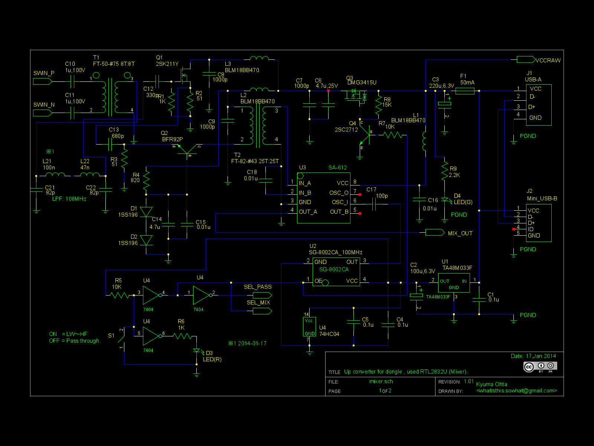
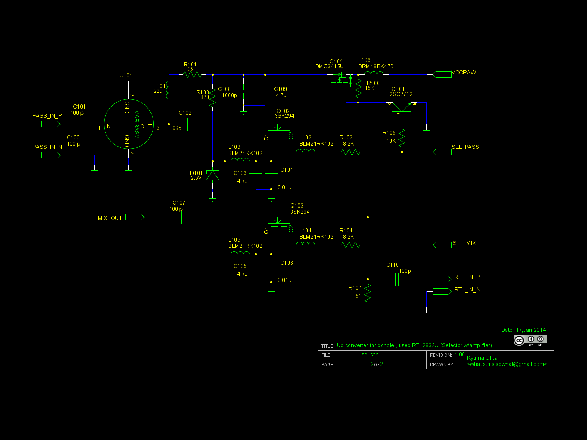

1セグ受信USBドングルを使った長波／中波／短波受信機
Sorry, under construction and Japanese only,Yet...
はじめに
最近、テレビのワンセグ放送を受信できるUSBドングルが非常に安価に入手できるようになりました。
その中でも、RTL2832系統を使ったドングルについては、Windows/Linux両方でラジオが受信できるようなソフトが整備されてきています。
このドングルを使って、色々と受信できるようにしよう。と言う悪だくみをはじめました(お蔭で、Open I2C Radioも、
XM7/SDLも、
13年12月から殆ど止まってました(T_T)）
で、大体問題がとれてきたので公表します。
基本的にどうするか？
基本的な考え方として、ドングルの入力の前に周波数変換回路を噛ませます。
この考え方自体は、KF7LZE氏が考案したDBM ICであるSA-602/SA-612を使った周波数変換回路をドングルと組み合わせた回路として公表されています。
この考え方を応用して、まずは周波数変換回路をつなぎ、その前段に高周波アンプをつなぎ、更にパススルー入力との切り替え回路まで繋いでしまおう。と言う、かなりゴージャスなものを作っていきます。
回路
・長波〜短波の受信については、2SK211のソース・フォロワでバッファして、非常にノイズの低いBFR92Pのベース接地回路で増幅します。
その後、SG-8002SCとSA-612で周波数変換して、3SK294で構成された高周波スイッチに送ります。
周波数オフセットは、100MHzです。
・VHFの受信については、MAR-8ASM
MMICで増幅して、3SK294で構成された高周波スイッチに送ります。
・電源はUSBから取りましたが、ドングルが290mA位電流消費するのと不正な信号を抑えるために、
74HC04と2SC2712、DMG3415Uを使ったDCスイッチ回路で電源を切り替えます。
出来れば、この機械の電源は外部のACアダプタから取ったほうがいいです。
周波数変換部

信号選択部

回路図まとめて。シンボル付き
このハードウェアを使うには？
・RTL2832のドライバ。Linuxの場合は、最近のカーネルには標準で添付されています。WindowsやMacの場合は、ドングルのベンダが出してるドライバを入れる必要があるかも知れないです。
・OSMO SDR版のGNU Radioドライバ。ラジオ受信ソフトに添付されてる場合やディストリビューションに用意されてる場合もあります。
・ラジオ受信ソフト。SDR#もしくはGQRXがいいでしょう。使い勝手から行くと、現状ではSDR#の方がいいかも。
ドングルのチェック
まず、ドングルの機能チェックをします。ドングルを直接USBにつなぎ、付属のアンテナを繋いでラジオ受信ソフトを起動します。
そして、近くのＦＭ局の周波数に近づくと電波の盛り上がった所があると思いますので、受信モードを”Wide
FM”にしてカーソルを動かしていきます。
そうすると、大体山のてっぺん辺りで放送が聞こえてくるでしょう。周波数にズレがあると思いますが、これは後で補正します。
ラジオ受信ソフトを一旦終了しましょう。
電源部のチェック
コンバータのミニUSB(B)コネクタを、パソコンと接続します。この時、テスタなどで各所の電圧をチェックして下さい。
・VCCRAWに5Vが出ていること。
・S1をON/OFFした時に、然るべき所に5.0Vが出てきて、もう片方がほぼ0Vになること。
・U1の出力に、3.3Vが出ていること。
ここまで問題がなければ、パソコンとコンバータの接続を一旦外します。
パススルー部分のチェック
一旦ドングルを外し、コンバータの中のUSB(A)コネクタにつなぎます。ドングルのアンテナ端子にコンバータの出力をつなぎます。
この時点ではS1はOFFにしてください。
その上で、パススルー側のアンテナコネクタにVHF/UHF用のアンテナをつなぎます。
緊張しながら(?)、コンバータのミニUSB(B)コネクタとパソコンの間をつなぎます。
ここまで問題がなく、D4のLED(緑)が点燈しているならば、とりあえず動いてるはずです。ので、再びラジオ受信ソフトを起動します。
配線や回路実装に問題がなければ、同じFM局が聴こえるはずです。
コンバータ部のチェック
さて、S1をONにします。
ラジオ受信ソフトのスペクトル表示が全く違ったと思います。それで良いです。
コンバータの入力に、アンテナをつなぎます。そして、地元のAM局の周波数に100.000MHzを足した周波数に合わせます(もしくは、ラジオNIKKEIでもいいでしょう)
ラジオ受信のモードを”AM”にして、近くで高い山の所にカーソルを合わせます。この時、ゲインを調整すると山が見えやすくなるでしょう。
コンバータ部に問題がなければ、ラジオが聞こえてくるはずです。
お疲れ様でした…と思ったらまだ早い。まだ少しやらないといけないことがあります。
ドングルの校正
ドングルの周波数設定は、結構いい加減です。ワンセグ受信と言う事で、それは仕方ない。
そこで、周波数の誤差を求めて、ラジオ受信ソフトに覚えさせる必要があります。
まず、(出来れば夜間に)105.000MHzに合わせます。この周波数：5.000MHzには、中国の標準電波局が出ていますので、
この標準電波の周波数と受信した周波数の誤差を算出することで校正をしていきます。
105.000MHz付近に、山が出ていると思います。この「山」にAMで合わせた時に「ピー・ピー・ピー」などと言う音が出ていたら、一番大きくなる所の周波数をメモりましょう。
この周波数をfxとして、標準電波の周波数をf0とすると誤差Dは、
D = ((fx-100.000) / f0) * 1e6 [ppm]
= ((fx-100.000) / 5.000) * 1e6[ppm]
となります。
このDを、”Frequency correction”などとなってる欄に入れます。これで、校正が終わりました。
こんどこそ、お疲れ様でした！！
デジタルラジオ
このソフトにDREAMと言うソフトを追加すると、デジタルラジオが受信できるようになります。詳細は後ほど。
電子工作系
ホームに戻る
XM7/SDL
Last Update: 17 Jan.2014 by Artane. ( whatisthis.sowhat _a_t gmail.com )